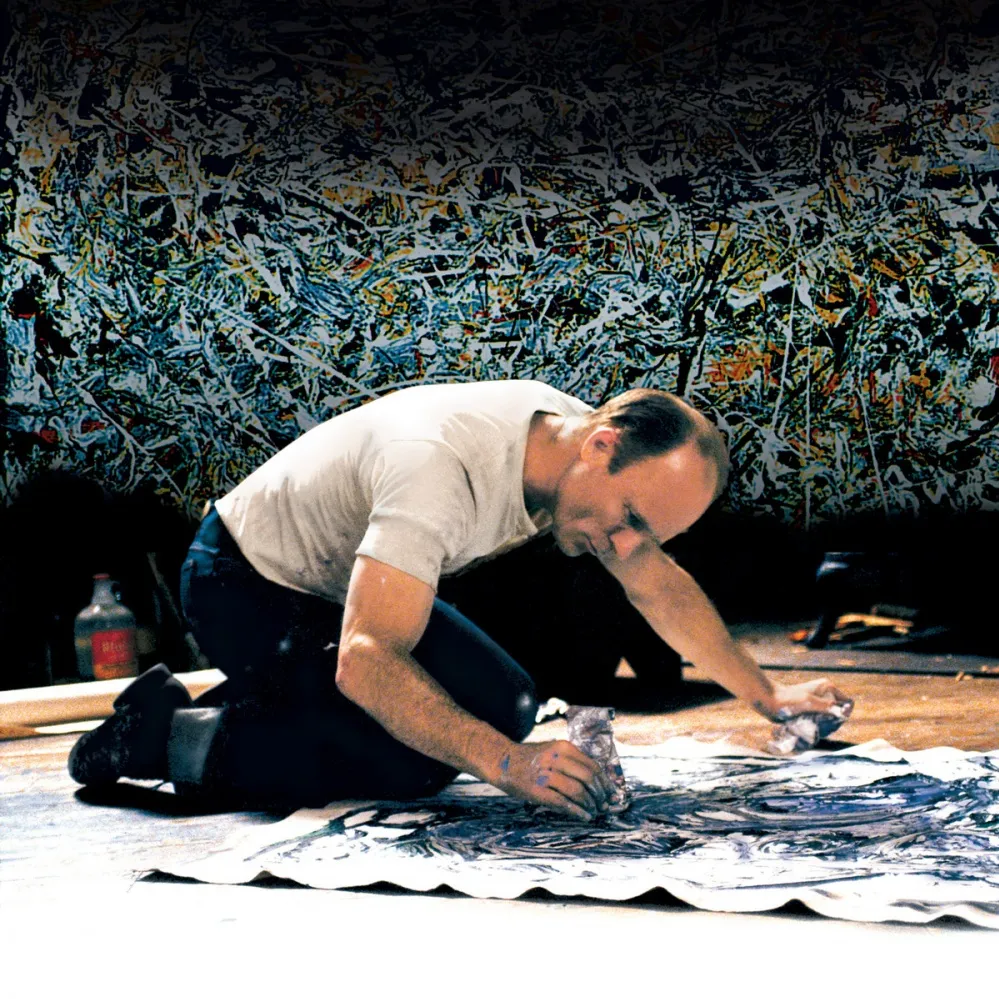
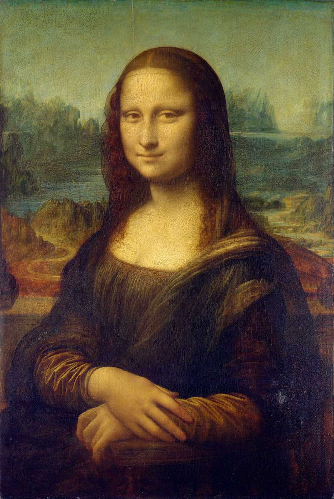

<!DOCTYPE html>
<html lang="en">
<head>
   <meta charset="UTF-8">
   <meta http-equiv="X-UA-Compatible" content="IE=edge">
   <meta name="viewport" content="width=device-width, initial-scale=1.0">
   <title>Document</title>
</head>
<body>
   
</body>
</html>
      
<he>
<li>Что можно отнести к искусству?
  <li>
   Основные составляющие искусств включают литературу (в том числе драму, поэзию и прозу), исполнительское искусство (среди них танец, музыка и театр) и изобразительное искусство (включая рисование, живопись, кинопроизводство, архитектуру, керамику, лепку и фотографию).</li> </li>
   <hr>
<li>ЕСЛИ ВЫ ХОТИТЕ ПОСМОТРЕТЬ ВИДЕО КАК ПОЯВИЛОСЬ ИСКУССТВО, ТО Я ОСТАВЛЮ ССЫЛКУ НИЖЕ</li>
<hr>
<a href="https://www.youtube.com/watch?v=-E0fQCQKUMc">КАК ПОЯВИЛОСЬ ИСКУССТВО</a>

   


<style>
p{
display: inline;
color: red;
font-size: 20px;
}

a{
display: block;

}


div{
height: 200px;
width: 50%;


background-color: blue;
background-image: url();
}


</style>
</head>

<body>
<p>
css работает
Какие существуют виды искусства?
Основные виды искусства: Временные или динамические делятся на звуковые (музыка) и словесные (литература). Пространственные (пластические) состоят из одной группы – изобразительное искусство, куда входят фотография, графика, живопись и скульптура
Что такое настоящие искусство кратко?

Настоящее искусство – искусство, способное затрагивать душу, оживлять ее. Оно объединяет людей, дает им возможность общаться без слов, чувствовать душевную боль друг друга и сочувствовать. Живопись, музыка, литература – под их воздействием человек способен изменить свои принципы и мировосприятие.

Какие виды искусства появились в 21 веке?
В ХХ веке помимо разновидностей реализма, импрессионизма, фовизма, пришедших из ХIХ века, сформировалось множество направлений, которые плавно перетекли и в начало XXI века: постимпрессионизм, постфовизм, различные направления абстрактного искусства, конструктивизм, экспрессионизм, сюрреализм, примитивизм, китч, .
Что характерно для искусства?
Характерные черты искусства - образность и наглядность, в нем используются особые способы отражения окружающей действительности (слово, звук, цвет, форма, движение и т. п.), искусство отражает чувственное отношение к окружающему миру и оно обращено к эмоциям человека, и носит ярко выраженный субъективный характер.


</p>


<div></div>
<a href="">hhhhh</a>
<a href="">gghh</a>

   <!-- </div>
   <a href="">grbbbhtgh</a>
   <div>
      </div>
<div>
   <p>нажмите на кнопку</p>
   <button>сюда</button>
   </div>

<a href="her.html"><button>перейти на страницу умар/a> */

</body>"
</html>